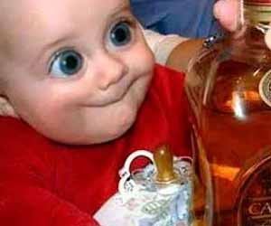

Пет от най-странните алкохолни напитки
Karlsson’s Vodka (Швеция)
Изготвя се от картофки, само дето технологията на класификация и дегустация е като на виното – гледа се годината, сорта, ферментацията, атмосферното състояниe докато картофите са расли, ароматите и всичките останали “работи”, където разбирачите им разбират :). А те казват, че разлика има, при това голяма. Е, не е зле да се пробва.Bilk (Япония) /идва от Beer + mILK
За държавата, която успешно “извращава” западняците със своите течности, от рода на Pepsi с вкус на краставички, или “свежо безалкохолно с вкус на зелена салатка”, или пък сок с вкус на “майчино мляко”, а дори и с вкус на морска змиорка или шоколад, е съвсем нормално да се изгаври и с бирата – 2/3 бира + 1/3 мляко = пийте си го сами!
Бирата произлиза от град Хоккайдо, като причината (пожелавам я на всеки производител на мляко) е свръх производство на мляко във ферма Накасибецу през 2006г. Синът на мениджъра, решава да използва млякото вместо вода при производството на бирата. Това е нелека задача, имайки предвид ниската температура на кипене и високото съдържание на нишесте. Идеята била да се направи аналог на цветната бира (има синя, зелена и червена), но се получила мека, приятна на вкус бира, която бързо става популярна за местното население. Въпреки това, надали бирата ще се хареса на англо-говорящите, тъй като късогледите ни приятели, комбинирайки думите Beer + mILK, пропуснаха да проверят, че думата bilk в превод означава “завличам, премятам”. Sam Adams Utopia Beer (USA)
Ето това е здрава бира! Може би затова се казва и “утопия” – няма как с 27° градусa! Дори прословутата ирландска бира с нейните 17° е като вода в сравнение с тази “почти водка”. Нищо чудно, че в цели 14 щата в САЩ, тази бира е забранена от Закона.Mamma Mia Pizzabeer (USA)
Мислите си, че досега видяхте странна бира? А какво мислите за бира, с вкус на пица? От дегустационна гледна точка, бирата е с вкус на риган, домати, чесън и босилек. Да, ама Том и Атена Сифурт се оказват доста по-директни хора – те наистина правят бирата от пица! А дори и след като си отхапете (пардон – отпиете) от бирата, остава добре познатия остатъчен вкус на чесънче.“Плъховско вино” (Китай, Корея)
В Китай виното с “мариновани плъхчета” е традиционна продукция с богата история. Малките плъхчета се заливат с оризова водка и ги оставят накиснати за 1 година. Китайците считат, че това е най-целебната (да бе!) напитка, която лекува почти всичко – от бъбреци до настинка. Още повече – смята се, че най-целебно е виното с плъхчета, които още не са прогледнали.